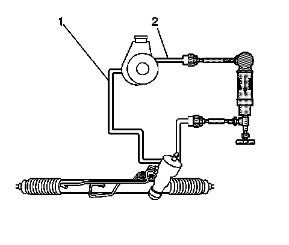
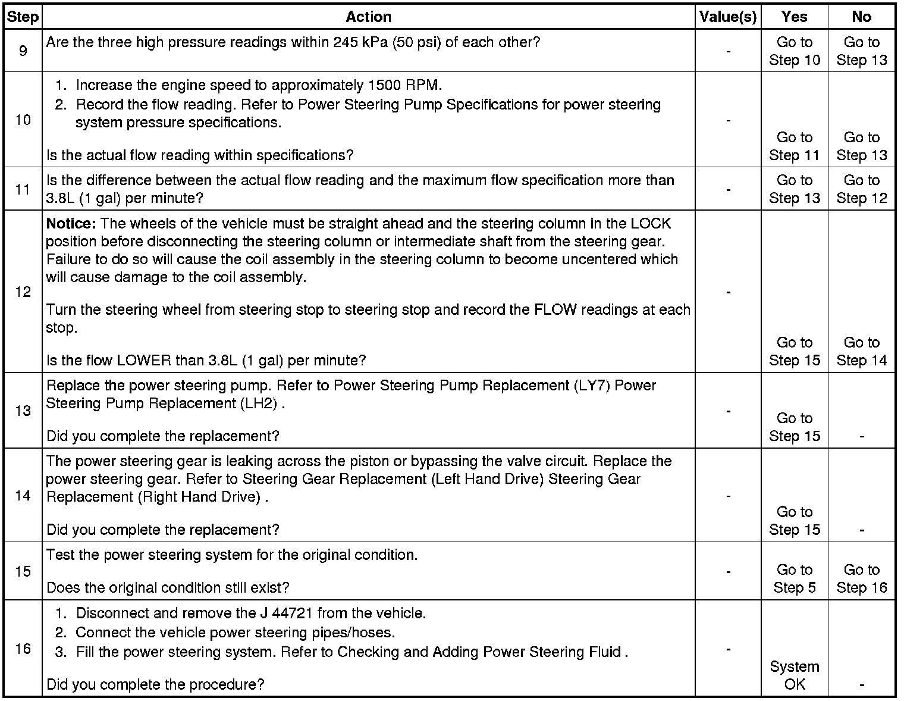

Power Steering System Test
Power Steering System Test
Rack and Pinion System
Rack and Pinion System:

1 - Power Steering Return Hose
2 - Power Steering Pressure Hose
Test Description
The numbers below refer to the step numbers on the diagnostic table.
5. This step tests the system for restrictions.
7. This step tests the following components for the following conditions:
* The pump for internal leaks
* The power steering pipes for kinks
8. This step tests the ability of the pump to regulate flow at maximum pressure.
10. This step tests the ability of the pump to regulate flow under normal operating conditions.
12. This step tests the internal components of the pump and the gear.

